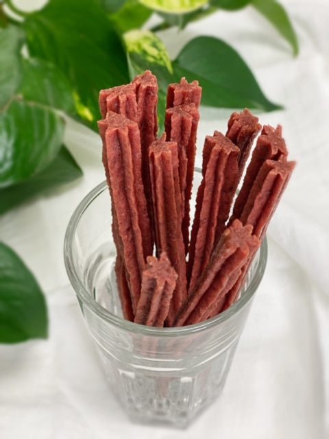
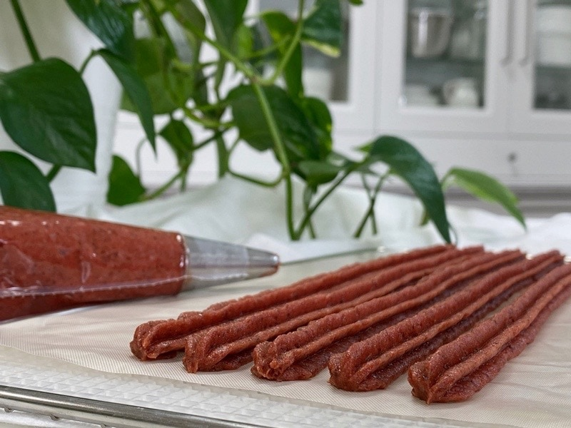

Strawberry “Twizzler” Snicks
– raw, vegan, gluten-free, nut-free –
I caved, and for the first time ever, I tried freeze-dried strawberries. I never gave freeze-dried fruits or veggies much thought before, but I felt it was time to start doing some research to see if they fit my standards as a viable ingredient for my raw creations.

Freeze-dried fruit refers to the process of removing almost all water content from frozen fruit, much like the dehydration process. With dehydration, warm, dry air is circulated across the food, which eliminates much of the water. The moist air is then exhausted so that water continues to be removed. The temperatures are high enough to remove water but not high enough to cook the food.
Dehydrated food is usually withered, wrinkly, and hard. With the aid of small dehydrators, this is something that can easily be done at home. Dehydration removes about 90-95 percent of the moisture content. It is said that dehydration doesn’t change the fiber or iron content of the food.
However, it can break down vitamins and minerals during the preservation process and retain less of their nutritional value when compared to freeze-dried food, especially if dried at too high a temperature.
Freeze-drying (lyophilization), on the other hand, isn’t something you can do at home, as it takes high-tech machinery. Sure, there are creative ways to attempt it in your own kitchen with the use of a few pieces of equipment and dry ice, but that is more for a home science experiment than a technique that you would use regularly.
Freeze-drying works by freezing the material and then reducing the surrounding air pressure to allow the frozen water in the material to sublimate directly from the solid phase to the gas phase. Temperatures are lowered, and then heating units apply a small amount of heat…. the process goes on. I don’t want to get into it too deep here. I found this site to be helpful for a full explanation.
But what does this do to the nutritional content? According to research by the American Institute for Cancer Research, freeze-dried foods retain the vast majority of the vitamins and minerals found in the original food. However, when compared to fresh fruits and vegetables, freeze-dried foods did lack some vitamins – like Vitamin C – which breaks down very rapidly.
I can see that if a person wants to know more accurate statistics about these techniques, much more investigating is going to need to be done. I am just scratching the surface. Ever get an itch on your back, and when you ask someone to scratch it, they end up having to chase the itch? To the left, up, up… over a smidgen, dooooooown, Aaah, yes! Wait… to the left… UP UP UP…aaaaah. Well, freeze-drying is my “itch,” and I am chasing the details on it. :)
But in the meantime, I gave freeze-dried strawberries a whirl. Textually, they are a bit odd to just pop in your mouth. Do you remember Astronaut Ice Cream? It reminds me much of that. As I was pondering the steps to take in creating my raw strawberry twizzlers, I decided that strawberries in their dried form would be better than fresh. I wanted a “dry” ingredient. So, I took my freeze-dried strawberries and blitzed them in the blender until they turn to a fine powder. Caution ~ do not remove the lid and inhale deeply while your nose in the blender container. Just trust me on this. :)
I am quite excited to announce that my version, my take, on strawberry Twizzlers, which only has three ingredients versus conventional strawberry Twizzlers. So say no to: CORN SYRUP; ENRICHED WHEAT FLOUR (FLOUR, NIACIN, FERROUS SULFATE, THIAMIN MONONITRATE, RIBOFLAVIN, AND FOLIC ACID); SUGAR; CORNSTARCH; CONTAINS 2% OR LESS OF: PALM OIL; SALT; ARTIFICIAL FLAVOR; MONO AND DIGLYCERIDES; CITRIC ACID; POTASSIUM SORBATE (PRESERVATIVE); ARTIFICIAL COLOR ( RED 40); MINERAL OIL; SOY LECITHIN; GLYCERIN.
So, will freeze-dried foods become a part of my diet? Not regularly, I will always aim for fresh, but I can see using items prepared this way from time to time. This will be a personal judgment call for each person. All I can say at this point is that this recipe for creating my version of strawberry twizzlers is much healthier than the conventional way of producing them.

Ingredients:
Preparation:
- To create beet juice, wash the beetroots thoroughly and rough chop into sizes that will fit in the juicer chute. Juice.
- If you don’t have a juicer, you can rough chop some beetroots and blend them with a touch of water in a high-powered blender.
- Then place in a mesh/nut bag and squeeze the juice from the bag. A little labor-intensive, but it can be done.
- In the food processor, fitted with the “S” blade, process the date paste, beet juice, and strawberry extract or freeze-dried strawberries until everything is well integrated.
- Place the batter in a piping bag fitted with a plain star tip. Mine was about 1/4″ in diameter.
- Pipe the batter onto the teflex sheet, from one edge to the other. Use steady pressure to create a straight line.
- Dehydrate at 145 degrees (F) for 1 hour, then reduce to 115 degrees (F) for up to 24 hours.
- Allow cooling before storing it in an airtight container. Should keep for a long time… don’t know for sure.
Culinary Explanations:
- Why do I start the dehydrator at 145 degrees (F)? Click (here) to learn the reason behind this.
- When working with fresh ingredients, it is essential to taste test as you build a recipe. Learn why (here).

© AmieSue.com